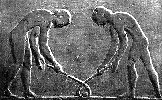

A bandy története
A bandy szabályai
A bandy története
A bandy vagy a jéglabda eredete 4000 évvel ezelõttre nyúlik vissza. A
nyomok és emlékek megmutatják a mai játékosok õseinek létezését, amelyek fõleg Iránban, Egyiptomban és Görögországban találhatók.

A 16-os számú Beni hasszáni temetkezési hely falán, amely a Nílus völgyében van, közel Miniához, egy jelenet látható, amelyben a játék
megjelenik két játékossal, ütõvel a kezükben, amint kezdik a játékot a labdával. A még fontosabb freskó Krisztus elõtt kb. 480-ból,
Görögországból származik, és hat játékost mutat, akik a játék kezdõ mozdulatát imitálják. Ettõl fogva a játék különbözõ fajtái jelentek
meg, különbözõ neveken és helyeken az egész világon.
A walesi "bandy" szó eredete úgy tûnik visszavezethetõ a germán "bandja" szóra. Egy könyvben - Sport és múlt 1801-bõl - Joseph Strutt
azonosította a bottal játszott bandyt a földeken játszott, bandy-labdának nevezett játékkal a 13. századból. A két játék közötti
különbség eltûnt, és ma már nem is létezik. Bury Fen (északkelet Anglia) az eredeti hazája a modern téli bandy játéknak a 18. század közepe óta.
Nem kétséges, hogy a Bury Fen Bandy Club az egyik leghíresebb. Néhány jól ismert futball klub viseli a nevében a bandy szót, mint például a
Sheffield United vagy a Nottingham Forest (például Sheffield Southern Bandy Club, 1855.).
Az elsõ bandy mérkõzés két londoni klub között volt 1875-ben. Ezelõtt a mérkõzések vidéken kaptak helyet a Bury Fen Bandy klub és más bandy klubok között.
A szabályok késõbb alakultak ki, a kezdeti idõben nem volt hivatalos szabályzat. Ez akkor jött létre, amikor 1891-ben megalakult Angliában a
Nemzetközi Bandy Egyesület. Ezt megelõzõen a csapatok a játék elõtt állapították meg a szabályokat és jelölték ki a játékterületet. Két
hosszú fûzfapálcát fagyasztottak a korai brit játékokon a jégbe, és a tetejüket összefogva kaput alakítottak ki. A kapuk általában olyan
messzire voltak egymástól, amennyit a jég megengedett. A bot görbített fûzfából és kõrisfából készült, hogy megóvja a jeget és végigüsse a
pályán a bandy labdát.
A szervezett bandy játék Svájcban, Németországban és Hollandiában jelent meg az 1890-es évek elején, de még hivatalosabban 1898-ban
Oroszországban, 1903-ban Norvégiában, 1907-ben Svédországban és 1908-ban Finnországban. A bandy jelenlegi formája 1955-ben jött létre,
amikor megalakult a Nemzetközi Bandy Szövetség. 1957 óta szerveznek világbajnokságokat.